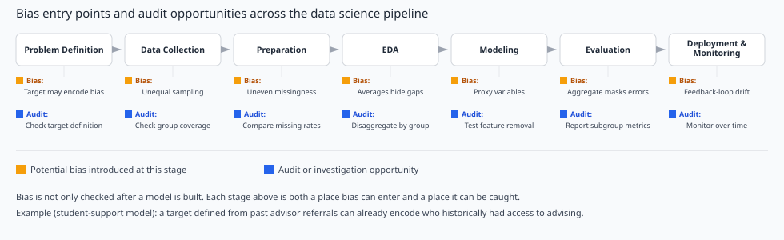
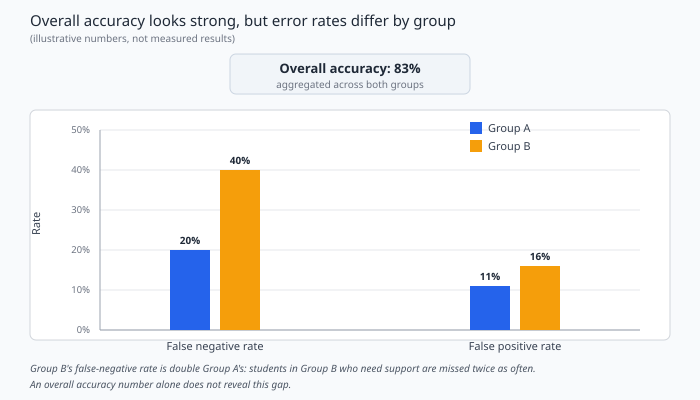

12 Bias, Fairness, and Ethics Across the Data Science Pipeline#
Big Idea#
Imagine a college pilots a model that flags students who may benefit from proactive academic support, such as an advisor check-in. The model performs well overall: it correctly predicts support needs for most students. But a closer look shows something the overall number hides: the model is much more likely to miss students in one group than in another, meaning those students do not get flagged for outreach even when they need it.
This single result is, at the same time:
A data quality concern (how was “needs support” defined and labeled in the first place?)
A model evaluation concern (an overall accuracy number did not surface this gap)
A fairness concern (the model’s errors are not spread evenly across students)
A deployment risk (acting on this model could quietly widen an existing gap in who receives support)
A model can have strong overall performance while producing unreliable or harmful outcomes for particular populations. That idea is the center of this chapter.
Note
This chapter builds directly on work from earlier modules: sampling and representation, missing data, exploratory data analysis, regression and classification, model evaluation, and explainability. It is not a general introduction to AI ethics. The question throughout is a practical one: where could bias enter this pipeline, how would you notice it, and what would you do?
Running example used throughout this chapter: the student-support prediction model. A college wants to predict which students may benefit from proactive academic outreach, such as an advisor reaching out before a student falls behind. A model is trained to flag students as “needs support” or “does not need support” based on academic and enrollment data. This example is revisited at several points below, because an early decision (how “needs support” is defined and labeled) resurfaces later as an evaluation and deployment question. Throughout, treat the model’s output as one input to a human advisor’s judgment, not as an automatic decision about a student’s eligibility for support.
12.1 Why Ethics Matters in Applied Data Science#
It is tempting to treat fairness and ethics as a final check, something to think about only after a model is built and performing well. The student-support example shows why that is a mistake: the model’s strong overall accuracy was never in question, and the problem only became visible once someone looked at performance by group, not overall.
A useful habit is to ask, at every stage of a project, not only “does this work?” but also “for whom does this work, and for whom might it not?”
This is not a claim that every model is unfair, or that every data science project needs a formal fairness audit. It is a claim that fairness is part of the same evaluation discipline you already use, applied to a question that an overall metric cannot answer by itself: whether the model’s benefits and errors are distributed in a way you can defend.
12.2 Where Bias Enters the Data Science Pipeline#
The data science pipeline is the organizing idea for this entire chapter, not just an opening diagram. Each stage below is revisited later in the chapter, and the pipeline is the lens the applied case study in §12.8 returns to.

Fig. 21 Bias can enter at every stage of the data science pipeline, and each stage offers its own opportunity to investigate and respond.#
1. Problem formulation and target definition. How “needs support” is defined shapes everything downstream. If the target is based on which students were previously referred to an advisor, rather than a more direct measure of academic difficulty, the target may already encode who historically had access to advising, not who actually needed it.
2. Data collection and sampling. If some groups of students are underrepresented in the historical data (for example, part-time or transfer students), the model has less evidence to learn from for those students, and its predictions for them are less reliable.
3. Data labeling and measurement. Labels are rarely neutral facts. “Needs support” recorded by one advisor may reflect that advisor’s judgment, workload, or awareness of resources, not a consistent standard applied to every student.
4. Data cleaning and preprocessing. Missing values are rarely missing at random. If students who are harder to reach (because of work schedules, housing instability, or limited contact information) also have more missing data, dropping incomplete records can quietly remove the students most likely to need support.
5. Exploratory data analysis. Summary statistics and visualizations computed across the whole dataset can look unremarkable while hiding a real difference between groups. A single histogram of GPA, for example, will not show whether missing data or enrollment patterns differ by student group.
6. Feature selection and modeling. A feature such as zip code, major, or enrollment status can act as a proxy for something else, such as income or first-generation status, even when that attribute is never used directly.
7. Model evaluation and validation. This is where the student-support example’s problem became visible: overall accuracy looked fine, but it did not show that one group’s errors were concentrated in missed support flags. §12.5 returns to this in detail.
8. Deployment, monitoring, and feedback loops. Once a model is in use, its own outputs can shape future data. If flagged students receive outreach and unflagged students do not, next year’s “who received support” data will reflect the model’s past decisions, not just original student need. That changes what the next version of the model learns from.
Pipeline stage |
Potential bias |
How to investigate |
Possible response |
|---|---|---|---|
Problem formulation / target definition |
Target reflects historical access, not true need |
Ask how the label was originally generated and by whom |
Revisit the target definition; consider a more direct, consistently applied measure |
Data collection / sampling |
Some student groups underrepresented |
Compare sample composition to the full student population |
Collect more data for underrepresented groups, or report the limitation clearly |
Data labeling / measurement |
Inconsistent judgment across labelers |
Check label agreement across advisors, terms, or sites |
Clarify labeling criteria; document known inconsistency |
Data cleaning / preprocessing |
Missingness concentrated in one group |
Compare missing-data rates across groups |
Investigate the cause before dropping rows; consider targeted follow-up |
Exploratory data analysis |
Aggregate summaries hide subgroup patterns |
Disaggregate key summaries by group |
Report subgroup-level EDA alongside overall summaries |
Feature selection / modeling |
A feature acts as a proxy for a sensitive attribute |
Test model behavior with and without the suspected proxy |
Document the trade-off; consider removing or replacing the feature |
Model evaluation / validation |
Overall accuracy hides unequal error rates |
Compute performance metrics by group, not only overall |
Report subgroup metrics alongside the overall metric |
Deployment / monitoring / feedback loops |
Model outputs shape future training data |
Track whether outcomes diverge from original definitions over time |
Monitor subgroup performance after deployment, not only at launch |
Bias is not something to check for only after the model exists. Every row of this table is a place to look before, during, and after modeling.
Checkpoint 1: Where would you look first?
Question. The student-support model above has strong overall accuracy. Name two pipeline stages, other than model evaluation, where bias could plausibly have entered, and give one concrete warning sign for each.
One reasonable answer. Data collection and sampling: a warning sign would be that part-time or transfer students make up a much smaller share of the training data than of the overall student population. Data labeling and measurement: a warning sign would be that the “needs support” label came from past advisor referrals, which may reflect uneven awareness of or access to advising rather than a consistent measure of actual need. Other reasonable answers (preprocessing, feature selection) are acceptable if the warning sign is concrete and tied to the stage.
12.3 Types and Sources of Bias#
A few recurring terms are worth defining clearly, since the same underlying idea sometimes goes by different names in different fields.
Selection and sampling bias. The data collected does not represent the population the model will be used on.
Representation imbalance. Some groups appear far less often in the data than others, so the model has less evidence to learn patterns for them.
Measurement bias. The way a variable is measured or recorded differs systematically across groups (for example, different data-collection methods at different campus sites).
Label bias. The target variable itself reflects human judgment, historical practice, or unequal access, rather than a consistent, objective standard.
Historical bias. Even perfectly measured, accurately labeled data can reflect a past pattern of unequal treatment, and a model trained on it can reproduce that pattern going forward.
Missing-data mechanisms. As covered earlier in this course, data can be missing completely at random, missing at random given other variables, or missing in a way related to the unobserved value itself. That last case is the one most likely to introduce bias.
Proxy variables. A feature that is statistically associated with a sensitive attribute (such as race, income, or disability status) even though that attribute is not used directly.
Evaluation bias. Using an evaluation approach, metric, or benchmark that does not reflect how the model will actually be used or who it will affect.
Feedback loops. A model’s own past decisions influence the data used to train or evaluate its future versions, as described in §12.2.
These ideas connect directly to concepts from earlier in the course: missing-data mechanisms, train/test splits, data leakage, and distribution shift. A proxy variable, for example, is a feature-selection problem with a fairness consequence. A feedback loop is a distribution-shift problem that a model itself can help cause.
Different fields (statistics, machine learning, law, sociology) sometimes use these terms slightly differently. When reading outside sources, check how a term is being used in context rather than assuming it matches the definition above exactly.
12.4 Representational Bias and Exnomination#
Two related ideas are useful for thinking about how people and groups are portrayed in data, not just how a model performs on them.
Representational bias refers to how people, groups, or perspectives may be underrepresented, stereotyped, or portrayed in a limited range of ways in a dataset or in generated content.
Exnomination refers to how one identity, group, or cultural position can be treated as an unmarked, unstated default, while other identities are explicitly named or labeled as different. Exnomination is not the same as a simple statistical majority. A majority is a fact about counts; exnomination is about which identity gets treated as “just normal” and goes unnamed, while others are marked as a variation from that norm, often regardless of the actual numbers involved.
A useful, accessible way to think about both ideas is an AI image-generation system. Suppose a system is given a neutral prompt that does not specify demographic details, such as “a scientist at work,” “a CEO presenting at a meeting,” or “a family having dinner.” The system still has to generate specific choices about age, gender, setting, and other details that the prompt left unspecified. If the same kind of choice is made by default across many generations, that default reflects patterns in the system’s training data and design, not a neutral or inevitable outcome. This is a hypothetical description of the kind of pattern such systems can produce, not a report of a specific generated image. You will investigate this directly, with your own prompts and your own evidence, in this week’s Canvas discussion, “AI Bias Detective: What Does AI Assume?” This chapter explains the underlying concepts; the discussion is where you run the experiment.
Why this matters for data science specifically, not just for image generation:
Image and caption datasets used to train models can reflect unequal representation.
Captions and labels attached to images can encode assumptions about who belongs in a role or setting.
A model trained on this data can learn and reproduce those patterns.
Content generated by one system can later be collected and used as training data for another system, carrying the pattern forward.
A small number of generated examples does not prove that a system is systematically biased. It is a starting point for a more careful, evidence-based investigation, the same way a handful of unusual rows in a dataset would prompt further checking rather than an immediate conclusion.
Representational harm vs. allocative harm. A representational harm affects how a group is portrayed, perceived, or rendered visible or invisible, for example, through stereotyped or narrow representations in training data or generated content. An allocative harm affects what a group actually receives: access to a job interview, a loan, a service, or, in the running example of this chapter, proactive academic outreach. The two are related: biased representations can shape the data that later feeds an allocative decision, but they are not the same thing, and a chapter or a model audit should be clear about which one it is addressing.
Checkpoint 2: Representational or allocative?
Question. A university’s promotional photos mostly show one kind of student as “a typical computer science major.” Separately, a different automated system uses features correlated with demographic group to help decide which students receive priority advising appointments. Which example is a representational harm, and which is an allocative harm? Explain the difference.
One reasonable answer. The promotional photos are a representational harm: they shape who is visible and how students are portrayed, without directly changing what any individual student receives. The priority-advising system is an allocative harm: it directly changes who gets a resource (a priority appointment). Representational harms shape perception and the data that gets collected and reused later. Allocative harms directly change outcomes for individuals.
12.5 Fairness and Model Evaluation#
The student-support model’s overall accuracy was 83%, calculated across both groups combined. On its own, that number looks reasonable. Looking at performance separately for two groups of students tells a different story.
Illustrative example, not measured experimental results. The table below uses hypothetical but internally consistent counts for 200 students per group, each with a base rate of 40 students who actually need support and 50 students flagged as needing support by the model.
Group |
TP |
FP |
FN |
TN |
Accuracy |
False-negative rate |
False-positive rate |
|---|---|---|---|---|---|---|---|
Group A |
32 |
18 |
8 |
142 |
87% |
20% |
11% |
Group B |
24 |
26 |
16 |
134 |
79% |
40% |
16% |

Fig. 22 An overall accuracy of 83% looks strong, but it hides a false-negative rate that is twice as high for Group B as for Group A (illustrative numbers).#
Two ways to read this table:
False negatives are students who actually need support but are not flagged. Group B’s false-negative rate (40%) is double Group A’s (20%): students in Group B who need support are roughly twice as likely to be missed. For this model, a false negative means a student who could benefit from outreach does not receive it.
False positives are students flagged as needing support who did not. Group B’s false-positive rate is also somewhat higher. A false positive here is a lower-stakes error than a false negative (an advisor check-in that was not strictly necessary), but it still has a cost: advisor time is limited, and a higher false-positive rate for one group uses up more of that limited time.
Three points matter when interpreting a table like this one:
Class imbalance and base rates matter. Both groups were given the same base rate (40 out of 200 students actually need support) specifically so the comparison is not confounded by a difference in how common the outcome is. Comparing groups with very different base rates requires extra care, since differences in raw counts can reflect the base rate rather than the model’s behavior.
A single fairness metric is rarely sufficient. This table reports accuracy, false-negative rate, and false-positive rate separately because they can tell different stories. A model can have very similar accuracy across groups while having a large gap in false-negative rate, exactly as shown here. Different fairness definitions (equal accuracy, equal false-negative rates, equal false-positive rates) can also conflict with each other mathematically; satisfying one does not guarantee the others.
A statistical disparity is not, by itself, evidence of unlawful discrimination or a specific cause. The table shows a gap worth investigating. It does not by itself tell you why the gap exists (a labeling issue, a sampling issue, a genuinely harder prediction problem for that group, or something else), and it does not establish intent or a legal finding. Those require further investigation, not just a metric.
Checkpoint 3: Interpreting a subgroup gap
Question. Using the table above, Group B’s false-negative rate is double Group A’s. What does this mean for individual students, and what can you not conclude from this number alone?
One reasonable answer. It means that Group B students who actually need academic support are being missed by the model about twice as often as Group A students who need support, so they are less likely to receive proactive outreach. On its own, the number does not tell you why the gap exists (it could trace back to labeling, sampling, missing data, or something else), and it does not establish intentional discrimination or a legal violation. It is evidence that further investigation is needed, not a finished conclusion.
12.6 Identifying and Mitigating Bias#
Responses to bias are organized here by when, in the pipeline, they happen. None of these is a one-time fix; all involve trade-offs, and a technical change alone does not always resolve the underlying problem.
Before modeling:
Examine how the training sample compares to the full population the model will be used on.
Review how the data was collected and how labels (such as “needs support”) were originally generated.
Investigate whether missingness is related to the outcome itself, not just how much data is missing.
Document known limitations of the dataset, rather than treating them as settled.
During modeling:
Evaluate whether a feature is acting as a proxy for a sensitive attribute, and what happens to performance and fairness if it is removed.
Compare against a simple baseline, the same way you would for any other model.
Consider group-specific performance during model selection and tuning, not only after a final model is chosen.
Review whether a “shortcut” the model has learned (a strong predictor that is easy to use but hard to justify) might be a proxy rather than a meaningful signal.
After modeling:
Conduct subgroup error analysis as a standard part of evaluation, not an optional extra step.
Compare multiple fairness measures, since (as shown in §12.5) they can tell different stories.
Document the model’s known limitations and the populations it was and was not evaluated on.
Monitor performance after deployment, since a model’s inputs, population, or feedback loops can all shift over time.
For the student-support model, this might mean: revisiting how the “needs support” label was generated before trusting it as a target; checking whether features like zip code or housing status are acting as proxies; reporting both overall and subgroup error rates before any deployment decision; and continuing to monitor subgroup false-negative rates after launch, not just overall accuracy.
12.7 Beyond Model Fairness: Responsible Data Science#
Fairness is one part of a broader set of responsibilities that show up in everyday data science work, not only in formal ethics reviews.
Privacy and consent. Was the data collected with appropriate awareness and consent, and is it being used in a way consistent with that original purpose?
Transparency and explainability. Can the model’s behavior be explained to the people affected by it and the people responsible for it, building on the explanation methods covered in Module 10?
Accountability. Is it clear who is responsible for a model’s decisions, and who is responsible for checking them?
Reproducibility. Could someone else repeat your analysis and get the same result, using your documentation?
Appropriate use of AI-generated data. If generated text, images, or synthetic data are used in a project, is that clearly documented, and has the risk of propagating bias (as discussed in §12.4) been considered?
Human oversight and documentation. Is there a clear process for a human to review, override, or escalate a model’s output, rather than treating it as final?
Limitations of automated decisions. Does everyone using the model’s output understand what it does and does not establish, as discussed throughout this chapter?
These are not abstract principles. They are decisions a working data scientist makes while preparing data, evaluating a model, and communicating results, including decisions about what to report, what to flag as uncertain, and what to recommend.
12.8 Applied Case Study: Should the Support Model Be Deployed?#
Return to the student-support model one more time, now with the full pipeline in view.
Who is represented in the data? The training data comes from three years of academic records at one college. Part-time and transfer students make up a smaller share of the training data than of the current student population, because the historical data-collection process relied partly on advisor referrals, which were less consistent for those groups.
How is the target defined? “Needs support” was defined using past advisor referrals, not a more direct, consistently applied measure such as academic standing combined with a standardized check-in.
What could be wrong with the labels? Referral patterns likely reflect which students had an assigned advisor who was aware of support resources and had time to make a referral, not only which students needed support. This is a plausible source of label bias.
What do aggregate metrics hide? Overall accuracy (83%) looked acceptable. The subgroup breakdown in §12.5 showed a false-negative rate twice as high for one group, meaning students in that group who need support are substantially more likely to be missed.
What further checks are needed? Before trusting this model: compare the referral-based label against an independent measure of academic difficulty where available; check whether the false-negative gap narrows or persists when the suspected proxy features are removed; and confirm whether missingness in the data is related to the student groups showing the largest error-rate gap.
Should the model be deployed? Not yet, and not without safeguards. A reasonable interim recommendation: do not deploy the model as the sole basis for outreach decisions. Instead, use it as one input alongside a baseline, human-reviewed process, specifically for the group with the higher false-negative rate, since that is where missed cases carry the most risk. Any deployment should include ongoing monitoring of subgroup false-negative rates, not just overall accuracy, and a documented plan for revisiting the label definition.
This worked interpretation illustrates the chapter’s practical mental model: trace the data back to its source, check who might be missing or mislabeled, look at who experiences the model’s errors, and decide what you would need to see before recommending its use.
Checkpoint 4: Recommend an investigation and a safeguard
Question. Before this model is used to prioritize advisor outreach, propose one specific investigation and one specific safeguard the team could put in place. Explain what each would tell them or protect against.
One reasonable answer. Investigation: audit how the “needs support” label was generated, comparing referral-based records against an independent measure of academic difficulty, to check whether the label itself is biased toward students who already had advisor access. Safeguard: require human review for students the model does not flag but who show other risk indicators (such as a sharp drop in credits attempted), so the model’s false negatives are not the only check in the process, and monitor the false-negative rate by group after deployment rather than relying on overall accuracy alone.
12.9 Practical Checklist: Before You Trust or Deploy a Model#
Use this checklist when evaluating a model for your final project, or in future professional work.
Before you trust or deploy a model, ask:
Data provenance. Where did this data come from, and who collected it?
Population representation. Who is well represented in the data, and who might be missing or underrepresented?
Measurement and labels. How was the target variable defined and labeled, and by whom?
Missingness. Is missing data related to the outcome itself, or to group membership?
Group performance. Have you checked performance separately by relevant groups, not only overall?
Model limitations. What has the model not been evaluated on, and where should it not be trusted yet?
Potential harms. If the model is wrong for one person, what is the real-world consequence, and does that consequence fall unevenly on any group?
Documentation and monitoring. Is the model’s scope, known limitations, and intended use documented, and is there a plan to monitor it after deployment?
Companion Activity#
This chapter is a reading-only task. The week’s hands-on practice is the existing Google Fairness programming exercise (ungraded): Open the exercise in Google Colab. It walks through auditing a dataset for bias and evaluating the effect of a mitigation step. No notebook is created or required in this book for Module 12.
Key Takeaways#
A model can perform well overall while producing substantially worse outcomes for a particular group. Overall accuracy alone cannot rule this out.
Bias can enter at every pipeline stage, from how the problem and target are defined through deployment and monitoring, not only at model evaluation.
Selection bias, label bias, historical bias, proxy variables, and feedback loops are related but distinct ideas, each connected to concepts already covered in this course (missing data, leakage, distribution shift).
Representational harm (how people are portrayed in data or content) is different from allocative harm (what people actually receive). Exnomination describes an unmarked default, not simply a statistical majority.
Comparing group-level metrics such as false-negative and false-positive rates can reveal disparities that an overall metric hides. A single fairness metric is rarely sufficient on its own, and a disparity is a reason to investigate further, not proof of a specific cause.
Mitigation strategies exist before, during, and after modeling, and involve trade-offs rather than one-time fixes.
Responsible data science includes privacy, transparency, accountability, reproducibility, and human oversight, as practical decisions made throughout a project, not only as a final review.
A useful habit for any model you build or use: ask where the data came from, who might be missing, what the model learned, who experiences its errors, and what you should check before recommending its use.
References#
Google. “Machine Learning Crash Course: Fairness.” https://developers.google.com/machine-learning/crash-course/fairness
Google. “Fairness: Programming Exercise.” https://developers.google.com/machine-learning/crash-course/fairness/programming-exercise
Barocas, S., Hardt, M., and Narayanan, A. Fairness and Machine Learning: Limitations and Opportunities. https://fairmlbook.org/
Buolamwini, J., and Gebru, T. (2018). “Gender Shades: Intersectional Accuracy Disparities in Commercial Gender Classification.” Proceedings of Machine Learning Research, 81. https://proceedings.mlr.press/v81/buolamwini18a.html
Crawford, K. (2017). “The Trouble with Bias.” Keynote address, NeurIPS 2017. https://www.youtube.com/watch?v=fMym_BKWQzk
Obermeyer, Z., Powers, B., Vogeli, C., and Mullainathan, S. (2019). “Dissecting Racial Bias in an Algorithm Used to Manage the Health of Populations.” Science, 366(6464). https://www.science.org/doi/10.1126/science.aax2342